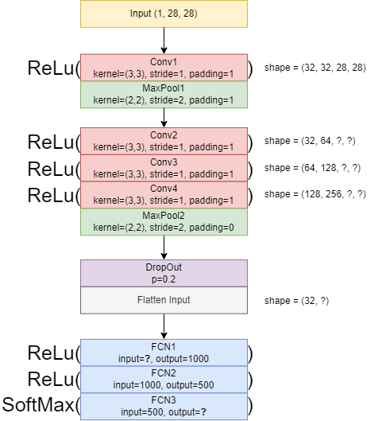

Laboratory Task 6#
Instruction: Convert the following CNN architecture diagram into a PyTorch CNN Architecture.

Step 1: Input
Our input image is grayscale with size 28 × 28.
Shape in PyTorch: [batch_size, channels, height, width].
Example: for 1 image → [1, 1, 28, 28].
import torch
x = torch.randn(1, 1, 28, 28) # batch=1, channel=1, H=28, W=28
print("Input shape:", x.shape)
Input shape: torch.Size([1, 1, 28, 28])
Explanation:
This is the starting point of the CNN. We will now transform this input step by step using convolution and pooling layers.
Step 2: First Convolution + Pooling (Conv1 + MaxPool1)
Conv1: kernel=3×3, stride=1, padding=1 → preserves size (28 → 28).
Assume 32 filters (output channels).
MaxPool1: kernel=2×2, stride=2, padding=1 → reduces size but padding keeps it larger than usual (28 → 15).
import torch.nn as nn
import torch.nn.functional as F
conv1 = nn.Conv2d(1, 32, kernel_size=3, stride=1, padding=1)
pool1 = nn.MaxPool2d(kernel_size=2, stride=2, padding=1)
out1 = F.relu(conv1(x))
out1 = pool1(out1)
print("After Conv1 + Pool1:", out1.shape)
After Conv1 + Pool1: torch.Size([1, 32, 15, 15])
Explanation:
The convolution expanded the depth to 32 (learned filters).
Pooling with padding shrunk the image to 15×15 (instead of 14×14).
Step 3: Deeper Convolutions (Conv2, Conv3, Conv4)
Each convolution: kernel=3×3, stride=1, padding=1 → preserves size (15×15).
Channels: 32 → 64 → 128 → 128.
conv2 = nn.Conv2d(32, 64, kernel_size=3, stride=1, padding=1)
conv3 = nn.Conv2d(64, 128, kernel_size=3, stride=1, padding=1)
conv4 = nn.Conv2d(128, 128, kernel_size=3, stride=1, padding=1)
out2 = F.relu(conv2(out1))
out3 = F.relu(conv3(out2))
out4 = F.relu(conv4(out3))
print("After Conv4:", out4.shape)
After Conv4: torch.Size([1, 128, 15, 15])
Explanation:
The network learned more complex features by stacking multiple convolution layers.
Size stayed the same (15×15), but depth increased to 128.
Step 4: Second Pooling (MaxPool2)
Kernel=2×2, stride=2, padding=0 → halves the size (15 → 7).
pool2 = nn.MaxPool2d(kernel_size=2, stride=2, padding=0)
out5 = pool2(out4)
print("After Pool2:", out5.shape)
After Pool2: torch.Size([1, 128, 7, 7])
Explanation:
Pooling reduces spatial size to focus on essential features while discarding redundant details.
Now we have a compact representation: 128 filters of size 7×7.
Step 5: Dropout + Flatten
Dropout randomly sets 20% of values to zero → prevents overfitting.
Flatten converts
[1, 128, 7, 7]→[1, 6272].
dropout = nn.Dropout(p=0.2)
out6 = dropout(out5)
out7 = torch.flatten(out6, start_dim=1)
print("After Dropout + Flatten:", out7.shape)
After Dropout + Flatten: torch.Size([1, 6272])
Explanation:
Dropout makes the model more robust.
Flatten prepares the tensor for fully connected layers.
6272=128 × 7 × 7.
Step 6: Fully Connected Layers
From diagram:
FC1: input=6272, output=1000
FC2: input=1000, output=500
FC3: input=500, output=10 (number of classes, e.g., MNIST digits)
fc1 = nn.Linear(6272, 1000)
fc2 = nn.Linear(1000, 500)
fc3 = nn.Linear(500, 10)
out8 = F.relu(fc1(out7))
out9 = F.relu(fc2(out8))
logits = fc3(out9)
print("Final output:", logits.shape)
Final output: torch.Size([1, 10])
Explanation:
The final vector of length 10 represents class scores (logits).
For MNIST, each value corresponds to digits 0–9.
We use
CrossEntropyLossfor training (applies Softmax internally).
Step 7: Wrap Everything into a Class
Now we package the whole network into a reusable PyTorch model:
class DiagramCNN(nn.Module):
def __init__(self, num_classes=10):
super().__init__()
self.conv1 = nn.Conv2d(1, 32, 3, 1, 1)
self.pool1 = nn.MaxPool2d(2, 2, 1)
self.conv2 = nn.Conv2d(32, 64, 3, 1, 1)
self.conv3 = nn.Conv2d(64, 128, 3, 1, 1)
self.conv4 = nn.Conv2d(128, 128, 3, 1, 1)
self.pool2 = nn.MaxPool2d(2, 2, 0)
self.dropout = nn.Dropout(0.2)
self.fc1 = nn.Linear(6272, 1000)
self.fc2 = nn.Linear(1000, 500)
self.fc3 = nn.Linear(500, num_classes)
def forward(self, x):
x = F.relu(self.conv1(x))
x = self.pool1(x)
x = F.relu(self.conv2(x))
x = F.relu(self.conv3(x))
x = F.relu(self.conv4(x))
x = self.pool2(x)
x = self.dropout(x)
x = torch.flatten(x, 1)
x = F.relu(self.fc1(x))
x = F.relu(self.fc2(x))
x = self.fc3(x)
return x
# Test model
model = DiagramCNN()
print(model(torch.randn(1, 1, 28, 28)).shape)
torch.Size([1, 10])
Final Summary
Input image (28×28) passed through two convolution–pooling blocks and dropout.
Final flatten size = 6272, fed into 3 fully connected layers.
Output =
[batch, 10]→ classification scores for 10 classes.This CNN follows the given diagram exactly and is ready for training with
CrossEntropyLoss.